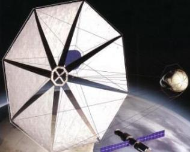

Метеоритная угроза для Земли
Наша планета, без сомнения, - уникальна. Благодаря своему удачному размеру, подходящему расстоянию до Солнца, которое дает умеренное количество тепла, наличию других планет в Солнечной системе на Земле стало возможно зарождение и развитие жизни. Среди всех перечисленных факторов, пожалуй, только последний вызывает некоторое недоумение – как могли повлиять на земную жизнь другие планеты? Но вспомним про существование таких тяжелых газовых гигантов, как Юпитер и Сатурн. Именно они сыграли роль «защитников» Земли от внешней угрозы – опасных астероидов, отклоняя их и притягивая к себе своими сильными гравитационными полями. Таким образом, те небесные тела, которые могли бы в одно мгновение прервать все развитие жизни на нашей планете, попросту не долетали до нее.Однако здесь нужно сделать оговорку – до Земли не долетало большинство астероидов, тогда как некоторые все же падали на поверхность планеты. О таком явлении говорят как о метеоритной угрозе, угрозе для существования земной жизни. Наиболее знаменитым проявлением такой угрозы стал упавший на Землю около 65 миллионов лет назад метеорит, который привел к коренному изменению всей жизни на планете, положив конец эпохе динозавров. Геологическим свидетельством этой причины служит то, что по всей планете обнаруживается слой глин с повышенным содержанием иридия, вещества, весьма редкого на Земле, но довольно распространенного в метеоритах. Исходя из этого, можно предположить следующий сценарий той катастрофы: упавший метеорит при ударе поднял в атмосферу огромное количество пыли, которая на несколько лет закрыла солнечный свет. В результате сначала погибли растения, а вслед за ними – и питавшиеся ими динозавры. А осевшая впоследствии пыль и сформировала тот слой глин, который сегодня так богат иридием. Но насколько актуальна метеоритная угроза сейчас, в наши дни? Приведем простой пример из современной действительности: 7 июня 2006 года на севере Норвегии было зарегистрировано падение крупного метеорита. Астрономы оценивают его массу всего в тысячу килограмм, тогда как вызванные им разрушения сравнимы с взрывом атомной бомбы, сброшенной на Хиросиму. Что было бы, если бы этот метеорит упал не в безлюдной местности, а на крупный город? Последствия такого падения были бы ужасны. Катастрофа случилась бы даже тогда, когда метеорит упал не на сушу, а в море – в этом случае образовалась бы волна цунами, разрушившая прибрежные зоны, где проживают миллионы людей.
|
Метеорный кратер, который находится в США в штате Аризона, стал первым кратером,
который был идентифицирован как след от
удара крупного метеорита. Диаметр - 1250 м, глубина - около 175 м.
Этот кратер образовался почти 50 тысяч лет назад.
|
6 марта 2006 г. на расстоянии около 3,2 млн км от Земли пролетел астероид 2000 PN9.
2000 PN9 - довольно крупный астероид, его размер в попереч-нике составляет 1,6 км.
При столкновении с камнем в 1 км может произойти катастрофа.
|
|
Модель "солнечного паруса", предназначенного для того, чтобы убрать астероид или комету с опасного для Земли курса.
Но как известно было уже две попытки запуска солнечного паруса (одна в 2006 году) и обе к сожалению провальные.
|
Астероид - Эрос: на расстоянии 316 миллионов кило-метров от Земли, за орбитой Марса он вращается вокруг
Солнца со скоростью 64 тыс км в час. А так как Эрос почти касается орбиты Земли,
он стал объектом пристального внимания.
|
|  |
Вот почему человечество уделяет достаточно большое внимание метеоритной угрозе. Работа в этой области здесь идет в двух направлениях – поиск и наблюдение малых космических тел и решение проблемы их отклонения (в том случае, если они действительно представляют угрозу для Земли). К сожалению, следует признать, что на сегодняшний день обнаружение новых астероидов идет недостаточно быстро. Американское космическое агентство NASA даже имеет для этого специальную программу - Spaceguard Survey (дословно – «Служба космической охраны»), в рамках которой отслеживаются все потенциально опасные космические тела в Солнечной системе. Однако пока обнаружено лишь 807 из предположительно 1100 больших скалистых астероидов и 57 комет. Кроме того, требуют, чтобы NASA расширило эту программу, включив в нее и отслеживание траекторий малых астероидов, способных вызвать цунами. Таких объектов обнаружено уже 3 611 из предположительно 100 тысяч.
Недостатки современной программы отслеживания астероидов особенно ясно видны тогда, когда астрономы обнаруживают небесные тела, уже удаляющиеся от Земли. Так, например, было с астероидом 2002 ЕМ7, который пронесся мимо нашей планеты 8 марта 2002 года на расстоянии в 450 тысяч километров (то есть всего в полтора раза дальше, чем расстояние до Луны). Обнаружили же его астрономы только четыре дня спустя, когда он уже стремительно удалялся от нас. Данный астероид, несмотря на то, что он имеет в поперечнике всего 50-100 метров, при падении на Землю мог бы вызвать значительные разрушения.
Что же делать с теми астероидами, которые были обнаружены и внесены в категорию «опасных»? Прежде, чем предлагать здесь какие-либо технические решения, нужно понять, что масса даже самого небольшого астероида составляет миллионы тонн. Что могут сделать с такой массой наши космические аппараты, которые весят лишь сотни килограмм? (для усиления данного вопроса заметим, что соотношение масс здесь примерно такое же, как между слоном и мухой)
Но не будем забывать, что в космосе ничто не препятствует движению, пусть даже и очень медленному. Предположим, что мы создали космический аппарат, несущий «снаряд», которым он затем «выстрелит» по астероиду. В результате астероид приобретет какую-то небольшую поперечную к своему движению скорость и станет постепенно отклоняться от своей первоначальной траектории, и, если, допустим, раньше он мог попасть на Землю, то теперь его движение будет проходить рядом. Разумеется, подобная коррекция должна производиться заблаговременно, чтобы к моменту прохождения мимо Земли отклонение достигло требуемой (безопасной) величины.
Именно на такой идее и основана космическая миссия с весьма подходящим названием «Дон Кихот» Европейского космического агентства (European Space Agency, ESA). Согласно плану миссии, к астероиду отправятся два космических аппарата – «Идальго» и «Санчо». Первый из них будет нести снаряд и произведет удар по астероиду, тогда как второй будет лететь рядом с астероидом и следить за тем, насколько сильно изменится его траектория в результате такого воздействия. Выбор подходящей «мишени» будет сделан в 2007 году. Следует отметить, что данная миссия – первая, в которой будет сделана попытка по управлению орбитой космических тел. Из-за этого для нее будет выбран безопасный астероид, тот, который никак не угрожал Земле, и не будет угрожать потом, даже в случае неудачной коррекции его орбиты.
Помимо данного варианта изменения орбиты астероида, ученые также изучают и возможность использования космических зеркал. Суть здесь достаточно проста: путем фокусировки солнечного излучения на поверхности астероида вызвать испарение части его вещества. В итоге вырывающиеся с поверхности газы образуют своеобразный «ракетный двигатель», который будет уводить астероид с первоначальной орбиты. Подобный способ хорошо подходит для астероидов, состоящих из слабо связанных фрагментов.
Эти и другие примеры показывают важное (и коренное) изменение в отношении человека к космосу. Если раньше человеку отводилась лишь роль пассивного наблюдателя, то сейчас он начинает активно преобразовывать окружающий космос под свои нужды – вначале, естественно, для того, чтобы сделать его более безопасным. Нетрудно заметить и дальнейшую тенденцию, в которой решение метеоритной угрозы станет лишь первым шагом. Речь здесь идет о массовом освоении космоса человеком, и, возможно, будущем расселении человечества по другим планетам Солнечной системы. Об этой впечатляющей перспективе речь пойдет в следующих разделах данной главы. Сейчас же мы продолжим разговор о существовании жизни, но теперь уже не на Земле, а в космосе, на других планетах.
Поиск жизни в космосе
Жизнь существует на Земле, и человечество – одно из ее проявлений. Но с незапамятных времен человека волновал такой вопрос: а есть ли жизнь где-нибудь еще во Вселенной? Данный вопрос, в свою очередь, можно разбить на три более простых: вопрос о существовании «супер-цивилизаций», далеко обогнавших в развитии нашу; цивилизаций, уровень которых сравним с человеческой; и, наконец, вопрос о существовании где-либо просто примитивных форм жизни. Итак, как же можно ответить на эти три вопроса?Сразу же следует признать, что поиски супер-цивилизаций человечество вести не в силах. Ведь вполне возможно, что все наши современные технические средства просто не в состоянии зафиксировать деятельность такой цивилизации (например, для передачи информации там используются совершенно отличные от электромагнитных способы).
Однако есть надежда, что подобное возможно для поиска цивилизаций, сопоставимых по уровню развития с нашей. Основным направлением здесь является поиск радиосигналов, аналогичных тем, что создают всевозможные антенны на Земле. Иными словами, данная задача – удел радиоастрономии. Кстати, в связи со сказанным следует отметить интересный факт: за годы существования радио и телевидения сигналы «бурной» вещательной деятельности человечества уже достигли многих ближайших к Солнцу звезд. Поэтому те цивилизации, которые находятся там, вполне могли бы зафиксировать их.
Самым знаменитым в этой области является проект SETI (Search for ExtraTerrestrial life and Intelligence – дословно «поиск внеземной жизни и разума»). В рамках этого начинания работает гигантский радиотелескоп Аресибо (рис. 1), расположенный в Пуэрто-Рико. Этот телескоп смонтирован прямо в кратере потухшего вулкана, и он записывает сигналы, поступающие из космоса. После записи происходит их обработка – для того, чтобы среди этого «космического шума» найти сигналы, имеющие не случайное происхождение (в идеале, конечно же – связанные с деятельностью внеземной цивилизации). Такая обработка ведется на огромном количестве компьютеров добровольцев по всему миру, за что SETI и аналогичные начинания стали называться «распределенными вычислениями». Подобная методика – по принципу «разделяй и вычисляй» – определяется двумя факторами: большим объемом поступающей информации и сложностью ее обработки. Такое было бы под силу только суперкомпьютерному центру… или же объединению тысяч обычных персональных компьютеров, расположенных в самых разных странах и на различных континентах, но обладающих в сумме той же самой вычислительной мощностью (что и имеет место в настоящее время). Однако несмотря на большие усилия, прикладываемые в этом направлении, до сих пор не найдено ни одного сигнала, который хоть сколько-нибудь походил на сигнал разумной цивилизации.
Другой путь, по которому идет современная астрономия, заключается в том, чтобы вместо радиосигналов искать признаки органической жизни. Подобная методика годится для поисков не только развитых цивилизаций, но и какой-либо жизни вообще, пусть даже и самой примитивной. Для понимания данного подхода удобнее всего сначала рассмотреть жизнь на Земле. Как известно из химии и биологии, основой земной жизни является углерод (кстати, именно по этой причине химию соединений углерода называют органической химией). Другими важными элементами на Земле являются азот и фосфор. Именно эти три элемента, через образование всевозможных химических соединений, и формируют основу каждого организма, каждой клетки на нашей планете, а именно – белки, жиры и нуклеиновые кислоты.